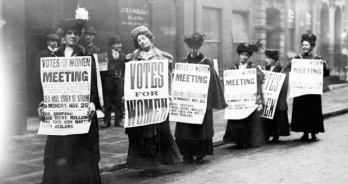

Feminism Great Battles
Le féminisme, un combat permanent
Retracer l’histoire du féminisme à travers les grandes batailles menées par les femmes pour obtenir leurs droits. Découvrez les grandes figures du féminisme telles que les Suffragettes ou Gisèle Halimi.
Les Suffragettes, prêtes à tout pour voter
Découvrez l’histoire des Suffragettes, ces femmes qui se sont battues pour obtenir le droit de vote au Royaume-Uni. En savoir plus
Gisèle Halimi, une féministe née
Apprenez-en plus sur la vie de l’avocate française, figure du féminisme moderne qui a lutté pour le droit à l’avortement. En savoir plus
L'histoire du féminisme
L’histoire du féminisme, de son origine jusqu’à notre époque grâce au livre Les femmes, actrices de l’histoire France, de 1789 à nos jours. En savoir plus